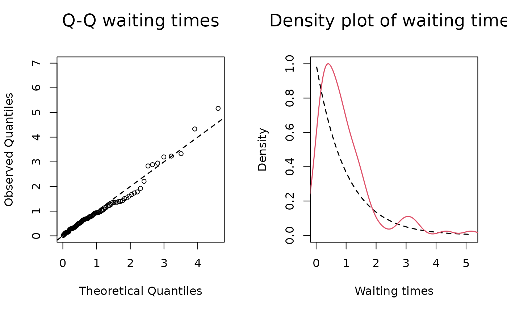
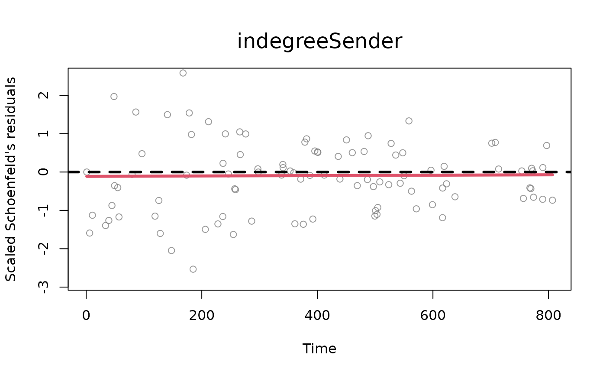
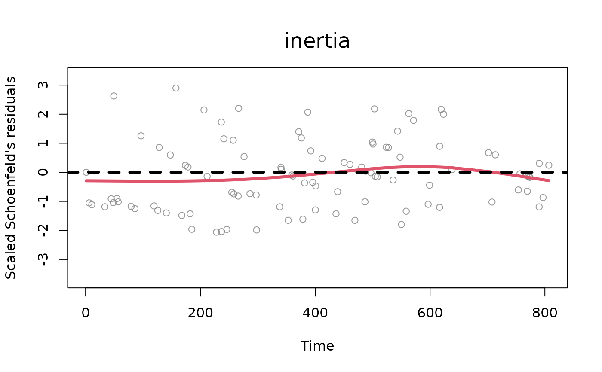
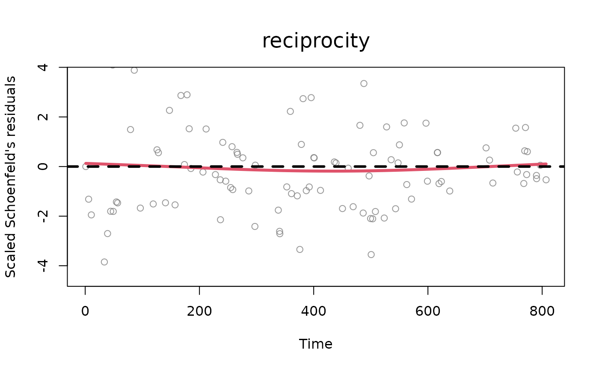

A function that returns a plot of diagnostics given a 'remstimate' object and depending on the 'approach' attribute.
Arguments
- x
is a
remstimateobject.- reh
a
remifyobject, the same used for theremstimateobject.- diagnostics
is a
'diagnostics' 'remstimate'object.- which
one or more numbers between 1 and 2. Plots described in order: (1) two plots: a Q-Q plot of the waiting times where theoretical quantiles (Exponential distribution with rate 1) are plotted against observed quantiles (these are calculated as the multiplication at each time point between the sum of the event rates and the corresponding waiting time, which should be distributed as an exponential with rate 1). Next to the q-q plot, a density plot of the rescaled waiting times (in red) vs. the theoretical distribution (exponential distribution with rate 1, in black). The observed density is truncated at the 99th percentile of the waiting times, (2) standardized Schoenfeld's residuals (per each variable in the model, excluding the baseline) with smoothed weighted spline (line in red). The Schoenfeld's residuals help understand the potential presence of time dependence of the effects of statistics specified in the model, (3) distributions of posterior draws with histograms (only for BSIR and HMC method), (4) trace plots of posterior draws after thinning (only for HMC method).
- effects
[optional] for tie-oriented modeling (model = "tie"), the names of the statistics which the user wants to plot the diagnostics for (default value is set to all the statistics available inside the object 'diagnostics'). The user can specify this argument for the standardized Schoenfeld's residuals (
which = 2), histograms of posterior distributions (which = 3) and trace plots (which = 4). Default value isNULL, selecting all the effects available in the 'remstimate' object.- sender_effects
[optional] for actor-oriented modeling (model = "actor"), the names of the statistics as to the sender model which the user wants to plot the diagnostics for (default value is set to all the statistics available inside the object 'diagnostics'). The user can specify this argument for the standardized Schoenfeld's residuals (
which = 2), histograms of posterior distributions (which = 3) and trace plots (which = 4). If the user wants to plot only the diagnostics of one or more effects of the sender model and at the same time wants to exclude the plots of the receiver model, then set argumentreceiver_effects = NAand specify the vector of effects tosender_effects(or leave itsender_effects = NULLfor selecting all effects of the sender model). Default value isNULL, selecting all the effects available for the sender model in the 'remstimate' object.- receiver_effects
[optional] for actor-oriented modeling (model = "actor"), the names of the statistics as to the receiver model which the user wants to plot the diagnostics for (default value is set to all the statistics available inside the object 'diagnostics'). The user can specify this argument for the standardized Schoenfeld's residuals (
which = 2), histograms of posterior distributions (which = 3) and trace plots (which = 4). If the user wants to plot only the diagnostics of one or more effects of the receiver model and at the same time wants to exclude the plots of the sender model, then set argumentsender_effects = NAand specify the vector of effects toreceiver_effects(or leave itreceiver_effects = NULLfor selecting all effects of the receiver model). Default value isNULL, selecting all the effects available for the receiver model in the 'remstimate' object (x).- ...
further arguments to be passed to the 'plot' method, for instance, the remstats object with statistics ('stats') when the object 'diagnostics' is not supplied.
Examples
# ------------------------------------ #
# tie-oriented model: "MLE" #
# ------------------------------------ #
# loading data
data(tie_data)
# processing event sequence with remify
tie_reh <- remify::remify(edgelist = tie_data$edgelist, model = "tie")
# specifying linear predictor
tie_model <- ~ 1 +
remstats::indegreeSender()+
remstats::inertia()+
remstats::reciprocity()
# calculating statistics
tie_reh_stats <- remstats::remstats(reh = tie_reh,
tie_effects = tie_model)
# running estimation
tie_mle <- remstimate::remstimate(reh = tie_reh,
stats = tie_reh_stats,
method = "MLE",
ncores = 1)
# diagnostics
tie_diagnostics <- diagnostics(object = tie_mle, reh = tie_reh, stats = tie_reh_stats)
# plot
plot(x = tie_mle, reh = tie_reh, diagnostics = tie_diagnostics)



